File: 000300.gt.txt (if the image is defective, simply delete all Arabic text and the line will be excluded)
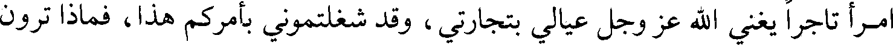
امرأ تاجرا يغني الله عز وجل عيالي بتجارتي، وقد شغلتموني بأمركم هذا، فماذا ترون
File: 000301.gt.txt (if the image is defective, simply delete all Arabic text and the line will be excluded)
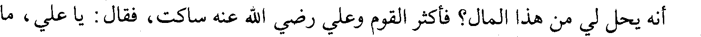
أنه يحل لي من هذا المال؟ فأكثر القوم وعلي رضي الله عنه ساكت، فقال : يا علي، ما
File: 000302.gt.txt (if the image is defective, simply delete all Arabic text and the line will be excluded)
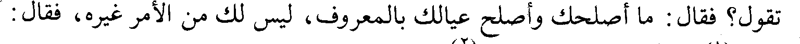
تقول؟ فقال : ما أصلحك وأصلح عيالك بالمعروف، ليس لك من الأمر غيره، فقال :
File: 000303.gt.txt (if the image is defective, simply delete all Arabic text and the line will be excluded)
القول(1) ما قال علي بن أبي طالب(2).
File: 000304.gt.txt (if the image is defective, simply delete all Arabic text and the line will be excluded)
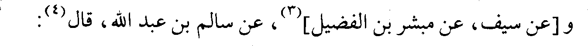
و [عن سيف، عن مبشر بن الفضيل](3)، عن سالم بن عبد الله، قال(4):
File: 000305.gt.txt (if the image is defective, simply delete all Arabic text and the line will be excluded)
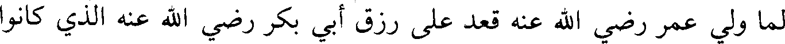
لما ولي عمر رضي الله عنه قعد على رزق أبي بكر رضي الله عنه الذي كانوا
File: 000306.gt.txt (if the image is defective, simply delete all Arabic text and the line will be excluded)
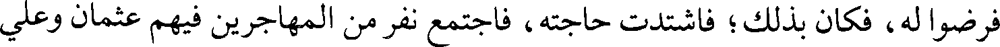
فرضوا له، فكان بذلك؛ فاشتدت حاجته، فاجتمع نفر من المهاجرين فيهم عثمان وعلي
File: 000307.gt.txt (if the image is defective, simply delete all Arabic text and the line will be excluded)
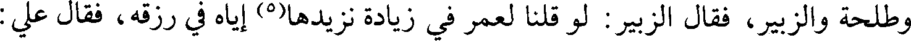
وطلحة والزبير، فقال الزبير : لو قلنا لعمر في زيادة نزيدها(5) إياه في رزقه، فقال علي :
File: 000308.gt.txt (if the image is defective, simply delete all Arabic text and the line will be excluded)
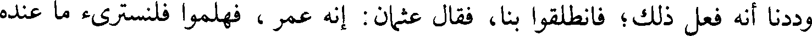
وددنا أنه فعل ذلك؛ فانطلقوا بنا، فقال عثمان : إنه عمر ، فهلموا فلنسترئ ما عنده
File: 000309.gt.txt (if the image is defective, simply delete all Arabic text and the line will be excluded)
من ورائه، نأتي حفصة فنكلمها(6) ونستكتمها أسماءنا ، فدخلوا / عليها وسألوها أن تخبر 75/ب
File: 000310.gt.txt (if the image is defective, simply delete all Arabic text and the line will be excluded)
بالخبر عن نفر لا تسمي له أحدا إلا أن يقبل، وخرجوا من عندها، فلقيت عمر في ذلك،
File: 000311.gt.txt (if the image is defective, simply delete all Arabic text and the line will be excluded)
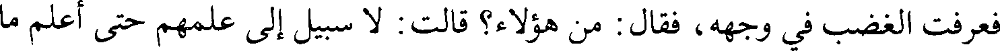
فعرفت الغضب في وجهه، فقال : من هؤلاء؟ قالت : لا سبيل إلى علمهم حتى أعلم ما
File: 000312.gt.txt (if the image is defective, simply delete all Arabic text and the line will be excluded)
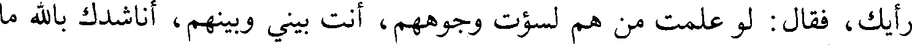
رأيك، فقال : لو علمت من هم لسؤت وجوههم، أنت بيني وبينهم، أناشدك بالله ما
File: 000313.gt.txt (if the image is defective, simply delete all Arabic text and the line will be excluded)
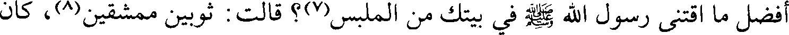
أفضل ما اقتنى رسول الله صلعم في بيتك من الملبس(7)؟ قالت : ثوبين ممشقين(8)، كان
File: 000314.gt.txt (if the image is defective, simply delete all Arabic text and the line will be excluded)
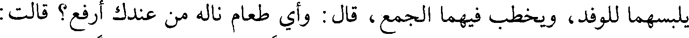
يلبسهما للوفد، ويخطب فيهما الجمع، قال : وأي طعام ناله من عندك أرفع؟ قالت :
File: 000315.gt.txt (if the image is defective, simply delete all Arabic text and the line will be excluded)
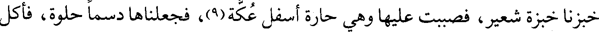
خبزنا خبزة شعير، فصببت عليها وهي حارة أسفل عكة(9)، فجعلناها دسما حلوة، فأكل
File: 000316.gt.txt (if the image is defective, simply delete all Arabic text and the line will be excluded)
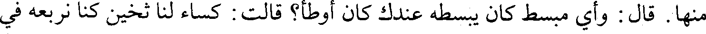
منها. قال : وأي مبسط كان يبسطه عندك كان أوطأ؟ قالت : كساء لنا ثخين كنا نربعه في
File: 000317.gt.txt (if the image is defective, simply delete all Arabic text and the line will be excluded)
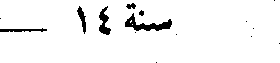
File: 000318.gt.txt (if the image is defective, simply delete all Arabic text and the line will be excluded)
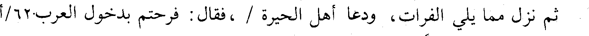
ثم نزل مما يلي الفرات، ودعا أهل الحيرة / ، فقال : فرحتم بدخول العرب. 62/أ
File: 000319.gt.txt (if the image is defective, simply delete all Arabic text and the line will be excluded)
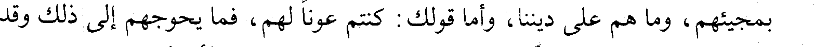
بمجيئهم، وما هم على ديننا، وأما قولك : كنتم عونا لهم، فما يحوجهم إلى ذلك وقد
File: 000320.gt.txt (if the image is defective, simply delete all Arabic text and the line will be excluded)
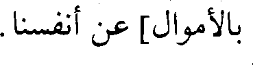
بالأموال] عن أنفسنا.
File: 000321.gt.txt (if the image is defective, simply delete all Arabic text and the line will be excluded)
فارتحل رستم فنزل النجف، وكان بين خروجه من المدائن إلى أن لقي سعدا
File: 000322.gt.txt (if the image is defective, simply delete all Arabic text and the line will be excluded)
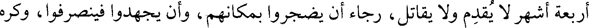
أربعة أشهر لا يقدم ولا يقاتل، رجاء أن يضجروا بمكانهم، وأن يجهدوا فينصرفوا، وكره
File: 000323.gt.txt (if the image is defective, simply delete all Arabic text and the line will be excluded)
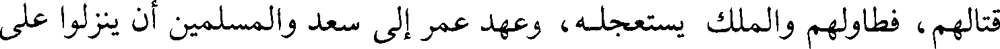
قتالهم، فطاولهم والملك يستعجله، وعهد عمر إلى سعد والمسلمين أن ينزلوا على
File: 000324.gt.txt (if the image is defective, simply delete all Arabic text and the line will be excluded)
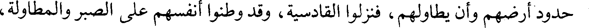
حدود أرضهم وأن يطاولهم، فنزلوا القادسية، وقد وطنوا أنفسهم على الصبر والمطاولة،
File: 000325.gt.txt (if the image is defective, simply delete all Arabic text and the line will be excluded)
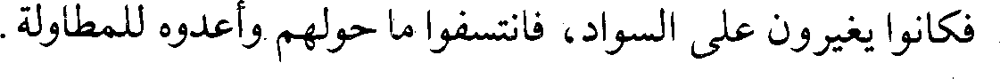
فكانوا يغيرون على السواد، فانتسفوا ما حولهم وأعدوه للمطاولة.
File: 000326.gt.txt (if the image is defective, simply delete all Arabic text and the line will be excluded)
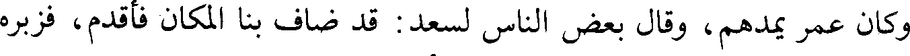
وكان عمر يمدهم، وقال بعض الناس لسعد : قد ضاف بنا المكان فأقدم، فزبره
File: 000327.gt.txt (if the image is defective, simply delete all Arabic text and the line will be excluded)
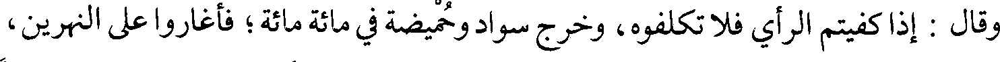
وقال : إذا كفيتم الرأي فلا تكلفوه، وخرج سواد وحميضة في مائة مائة؛ فأغاروا على النهرين،
File: 000328.gt.txt (if the image is defective, simply delete all Arabic text and the line will be excluded)
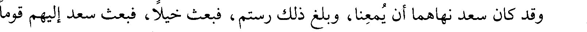
وقد كان سعد نهاهما أن يمعنا، وبلغ ذلك رستم، فبعث خيلا، فبعث سعد إليهم قوما
File: 000329.gt.txt (if the image is defective, simply delete all Arabic text and the line will be excluded)
فغنموا وسلموا.(1)
To Save: `Ctrl+s`, make sure to choose `Webpage, complete`!